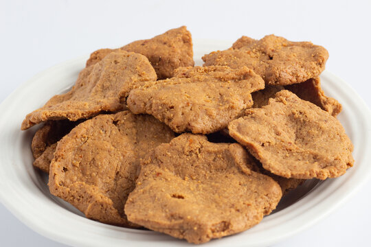

Kuli kuli

Kuli kuli
CKuli Kuli is a Northern Nigerian snack that is made from dry roasted peanuts/groundnuts, ground
into a semi-paste, mixed with select spices and deep fried until it hardens. Peanuts are
delicious when eaten by themselves, but they're even better when made into cookies. These
particular cookies come from northern Nigeria. Locally they are called kulikuli, and they
are spicy, crunchy, and yummy. It is often eaten alone or with a mixture of garri also
known as cassava flakes, sugar and water popularly called "garri soakings".
Ingredients
- 2 cups of peeled, salted and roasted groundnuts
- Groundnut oil
- 1 tea spoon of ground pepper
- 1 and half teas spoon of ginger powder or grated ginger to taste
Recipe instructions
- 2 cups of peeled, salted and roasted groundnuts
- Groundnut oil
- 1 tea spoon of ground pepper
- 1 and half teas spoon of ginger powder or grated ginger to taste
PREPARATION
- Grind or pound the groundnuts/peanuts with the ginger until smooth. A powerful food processor can also be used. Do not allow the mix to turn to paste complete.
- Take a clean and dry muslin cloth, scoop the pasty nut into it and try to squeeze out the oil as much as you can. The more oil you can squeeze out, the crunchier your kuli kuli.
- Pour the result into a bowl and add the ground pepper, while mixing with your fingers.
- Mold the paste into either small balls or cylindrical sticks. You can choose a fun shape if you'd like. Add a little water to help it mold easily.
- Heat enough oil in a non-stick pan until the oil begins to smoke. You can add the slices of onion to the oil to give if some flavour.
- Add the molded paste into the oil and allow to fry till golden brown on all sides.
- Remove from oil, place in absorbent paper and allow to cool.
back to home page